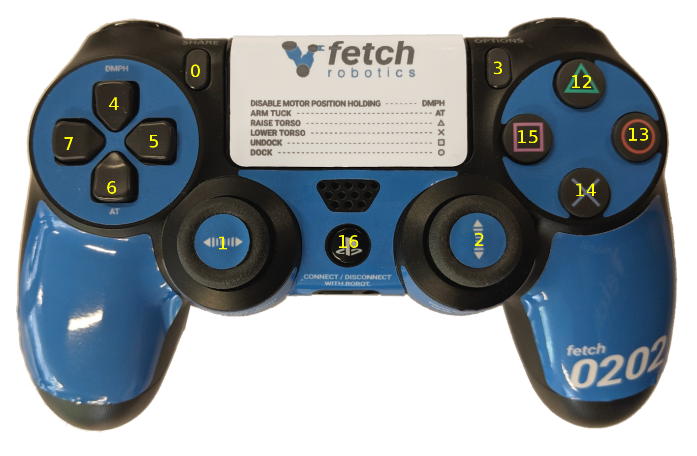
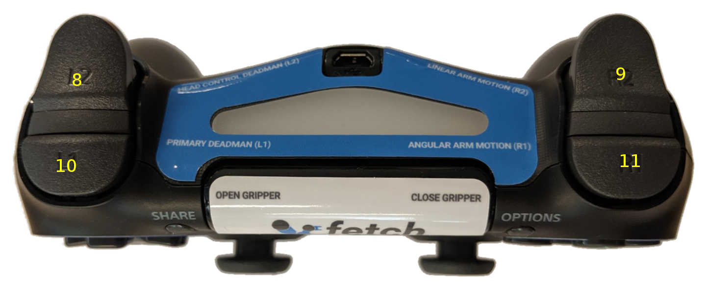

Tutorial: Robot Teleop
Using the Robot Joystick
Each Fetch and Freight ship with a robot joystick. Whenever the robot drivers are running, so is joystick teleop. The joystick is capable of controlling the movement of the robot base, torso, head and gripper.
Warning
Fetch robots use wireless controllers. As with any wireless technology, maximum range between controller and robot can vary depending on environment. You should experiment with your robot to understand the distance limit at which you can safely control your robot.
Note
If you are using the older PS3 controller a different version of this tutorial can be found here.
Note
To switch your robot to use a PS4 controller instead of a PS3 controller, see the instructions here.
{kind=link}

{kind=link}

Button # |
Function (details below) |
|---|---|
0 |
Open gripper |
1 |
Control robot turning |
2 |
Control forward/backward driving |
3 |
Close gripper |
4 |
|
5 |
Not used |
6 |
Arm tuck |
7 |
Not used |
8 |
Head control deadman |
9 |
Linear arm (“tooltip”) control |
10 |
Primary deadman |
11 |
Angular arm (“tooltip”) control |
12 |
Torso up |
13 |
Not used |
14 |
Torso down |
15 |
Not used |
16 |
Pair/unpair with robot |
To pair the controller with the robot, press the middle button (16) once the robot has powered on. The controller will vibrate once successful. To unpair, hold the button for 10 s. The LED indicator on top will turn off.
To drive the robot base, hold the primary deadman button (button 10 above) and use the two joysticks. The left joystick controls turning velocity while the right joystick controls forward velocity.
Warning
Whenever driving the robot, always lower the torso and tuck the arm to avoid potentially unstable operation.
To control the head, release the primary deadman and hold the head deadman (button 8). The left joystick now controls head pan while the right joystick controls head tilt.
To move the torso up, hold the primary deadman and press the triangle button (12). To move the torso down, hold the primary deadman and press the X (14).
To close the gripper, hold the primary deadman and press the close button (3). To open, hold the primary deadman and press the open button (0).
The Fetch arm/gripper can be teleoped by combining several inputs:
Linear motion of the end effector: Primary deadman + Button 9 + joystick input
Angular motion of the end effector: Primary deadman + Button 11 + joystick input
Some controllers, such as the arm and head controllers, will attempt to hold position indefinitely. Sometimes this is not desired. Holding button (4) for 1 second will stop all controllers except the base controller and the arm gravity compensation.
Moving the Base with your Keyboard
Note
You will need a computer with ROS installed to properly communicate with the robot. Please consult the ROS Wiki for more information. We strongly suggest an Ubuntu 20.04 machine with ROS Noetic installed.
To teleoperate the robot base in simulation, we recommend
using the teleop_twist_keyboard.py script from
teleop_twist_keyboard
package.
>$ export ROS_MASTER_URI=http://<robot_name_or_ip>:11311
>$ rosrun teleop_twist_keyboard teleop_twist_keyboard.py
Software Runstop
In addition to the runstop button on the side of the robot, similar software functionality is also available, allowing for button presses on the PS4 controller or a program to disable the breakers. This functionality is available in release 0.7.3 of the fetch_bringup package. The teleop portion is disabled by default.
Using Software Runstop
To activate the software runstop, publish True to the /enable_software_runstop topic.
Alternately, with the teleop runstop enabled, pressing both of the right trigger buttons (buttons 9 and 11) will activate the software runstop. The software_runstop.py script in fetch_bringup can be modified to change the button(s) for the software runstop.
Once activated, the software runstop can be deactivated by (1) toggling the hardware runstop, or (2) disabling the software runstop by passing False to the /enable_software_runstop topic.
Enable Teleop Software Runstop
Note
In order to edit the robot.launch file, you will
need to use a terminal editor (such as nano or vim), or use the -X flag
with SSH to use a graphical editor (such as gedit). Additionally, the editor
must be launched with sudo. Instructions below use nano.
To enable the software runstop, first SSH into the robot, and then modify the robot drivers launch file to use it.
We need to modify the robot.launch file to pass the correct arg to the software runstop script:
>$ sudo nano /etc/ros/noetic/robot.launch
In this file there should be a Software Runstop entry near the end. By default this entry contains an args line, with a value of “-a -b -g”. To add teleop control, add the “-t” flag as well. This section will then look like the below. If your robot is an older one and does not have a Software Runstop entry, you will want to simply copy the block the below.
<!-- Software Runstop -->
<include file="$(find fetch_bringup)/launch/include/runstop.launch.xml">
<arg name="flags" value="-a -b -g -t" />
</include>
Note that the -a, -b, -g flags correspond to letting the software runstop control the arm, base and gripper breakers, respectively.
Additionally, if completely disabling the software runstop functionality is desired, the above section in robot.launch can be commented out or removed.
Finally, restart the drivers so that our changes take effect:
>$ sudo service robot stop && sudo service robot start
Re-pairing Robot Joystick that Won’t Connect
For a Bluetooth PS4 controller, the controller can be re-paired through the Ubuntu Bluetooth settings. To put the controller in pairing mode, press and hold the Share button, and then press and hold the center PS4 button for a second and then release it, and then release the share button. The LED on the controller should start flashing twice, once per second.
Note
Connecting the PS4 controller to the robot via USB appears to cause connecting to no longer work. This issue may also arise any time the PS4 controller is plugged in to e.g. an Ubuntu computer. We recommend instead to charge the controller directly with a USB-AC power adapter. To resolve this, “forget” the device in the Bluetooth settings, and then re-pair the controller.
Using Deadzone Parameter to Correct Drift
Some controllers may have poorly-zeroed joysticks, meaning that they send a nonzero value when the joystick is untouched and ought to send a zero value. This will be apparent if you press the deadman button on the controller, and the robot slowly moves without any input to the joysticks.
This behavior can be compensated for by using a rosparameter: joy/deadzone (ROS docs), which defines the amount by which the joystick has to move before it is considered to be off-center, specified relative to an axis normalized between -1 and 1.
Add/set the parameter in /etc/ros/noetic/robot.launch:
<!-- Teleop -->
<include file="$(find fetch_bringup)/launch/include/teleop.launch.xml"/>
<param name="joy/deadzone" value="0.1"/>
You can inspect the output of rostopic echo /joy with the controller
connected to choose an appropriate value for your controller.
To test a value after making the above change, with the arm safely resting so that it won’t fall, restart roscore.:
sudo service roscore restart